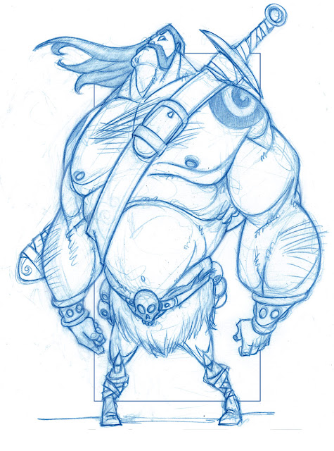

Modelling and Texturing Barbarian
For my optional module in second year I chose modelling and texturing. Out of the character concept options I chose the barbarian to create for it's focus on anatomy, stylised form, and a personal bias towards fantasy.

"Barbarian with Attitude" by Michael McCabe
Return to Home